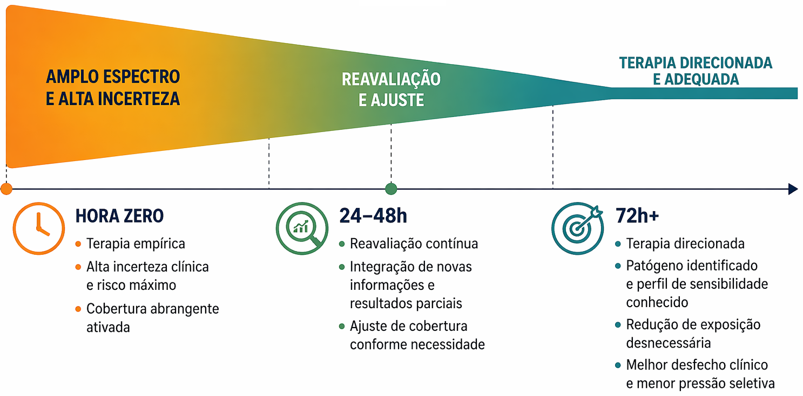

Capítulo 8 — Antibioticoterapia nas Principais Infecções
Bacteremia e sepse
Bacteremia e sepse não são sinônimos. Bacteremia corresponde
à presença de bactérias viáveis na corrente sanguínea,
demonstrada por hemocultura. Sepse é uma condição associada
à disfunção orgânica potencialmente fatal decorrente de uma
resposta desregulada do organismo à infecção
2,5.
Uma bacteremia pode ocorrer sem sepse, enquanto um quadro de
sepse pode estar presente mesmo quando as hemoculturas não
identificam o agente. Por isso, a interpretação deve integrar
manifestações clínicas, disfunção orgânica, provável foco
infeccioso e resultados microbiológicos 5,8.
Na presença de choque séptico ou alta probabilidade de sepse,
a cobertura antibacteriana adequada deve ser iniciada
imediatamente. As culturas devem ser coletadas antes do
tratamento quando isso puder ser feito sem atraso relevante.
Quando há possibilidade de infecção, mas não há choque, uma
avaliação rápida ajuda a definir a necessidade e a urgência
do tratamento 5.

A estratégia empírica inicial deve ser reavaliada à medida
que surgem informações clínicas e microbiológicas.
Caso clínico progressivo
A conduta muda quando a informação muda
Analise o dado disponível em cada momento e escolha a
decisão mais coerente antes de acompanhar a evolução.
1Hora zero
214 horas
348–72 horas
Hora zero
Instabilidade hemodinâmica
Pessoa internada apresenta febre, calafrios, hipotensão,
alteração do estado mental e sinais de hipoperfusão.
Existe suspeita de infecção relacionada a cateter venoso
central.
Informação disponível
Suspeita de infecção associada à disfunção orgânica
Grau de certeza etiológica
Foco provável, agente desconhecido
Evolução concluída
A terapia empírica é uma decisão inicial, não definitiva
Hora zeroAgir diante do risco
Estabilizar, coletar culturas sem atraso relevante,
iniciar cobertura adequada e investigar o foco.
→Resultado preliminarRevisar a coerência
Interpretar a bacterioscopia, a provável fonte e a
evolução sem antecipar uma suscetibilidade desconhecida.
→Resultado finalDirecionar o tratamento
Ajustar o esquema ao agente, à suscetibilidade, ao foco
e à resposta clínica.
Como interpretar a hemocultura
Positividade
O resultado deve ser interpretado no contexto
O microrganismo identificado, o número de amostras
positivas, o tempo até a positividade, a origem da coleta
e a compatibilidade clínica ajudam a diferenciar
bacteremia verdadeira de possível contaminação
3,8.
Resultado negativo
Hemocultura negativa não exclui sepse
Tratamento prévio, baixo número de microrganismos
circulantes, volume insuficiente de sangue e agentes
de difícil crescimento podem reduzir a detecção
microbiológica 5,8.
Foco infeccioso
O antibacteriano pode não ser suficiente
Cateter infectado, coleção, obstrução ou tecido
desvitalizado podem exigir medidas específicas de
controle do foco, além do tratamento sistêmico
3,5.
Reavaliação
Amplo espectro não deve ser mantido automaticamente
Evolução clínica, culturas e suscetibilidade devem orientar
a manutenção, o direcionamento, a ampliação ou a suspensão
do tratamento, conforme a probabilidade de infecção
3,5,6.
A gravidade determina a urgência inicial, mas os resultados
subsequentes devem modificar a conduta. Identificação do agente,
suscetibilidade, controle do foco e evolução clínica orientam
o tratamento definitivo.